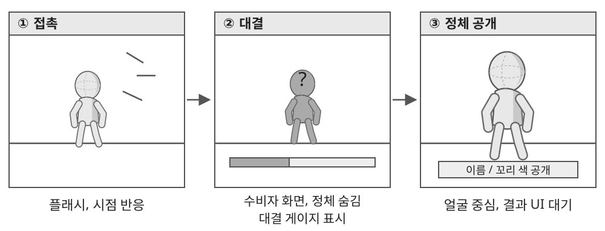

2.1 꼬리 잡기 카메라 연출
● 연출 목적
- 꼬리가 잡힌 사실을 즉시 전달하고, 일반 이동에서 대결로 시선을 전환.
- 대결 중에는 공격자의 정체를 숨기고, 결과 후 공개 컷에서 얼굴과 이름을 확인하도록 구성.
- 승패 판정은 게임 규칙을 따르며, 카메라는 판정 결과를 전달하는 역할로 한정.

| 단계 | 화면 연출 | 정보 표시 |
|---|---|---|
| 접촉 | 짧은 플래시와 시점 반응 | 꼬리를 잡힌 상황 전달 |
| 대결 진입 | 공격, 수비 역할에 맞는 구도로 전환 | 대결 UI 준비 |
| 대결 | 게이지, 비네팅, 심장박동 사용 | 수비자 화면에서 공격자 얼굴, 이름, 색 정보 숨김 |
| 결과 | 탈취 또는 탈출 판정에 따라 분기 | 결과 화면과 연출의 표시 순서 제어 |
| 정체 공개 | 탈취 성공 시 공격자의 얼굴을 중심으로 구도 전환 | 이름, 꼬리 색 공개 |
| 복귀 | 일반 카메라 또는 결과 화면으로 전환 | 연출 중 적용한 입력 잠금, 숨김 해제 |
● 적용 원칙
- 정체를 가리는 처리는 수비자가 보는 정보에 적용.
- 공개 컷이 끝나기 전에 결과 패널이 얼굴을 덮지 않도록 표시 시점을 분리.
- 탈출, 취소 시 정체 공개 없이 일반 화면으로 복귀.
- 이동, 대결 카메라에는 벽과 장애물의 관통을 막는 충돌 보정 적용.